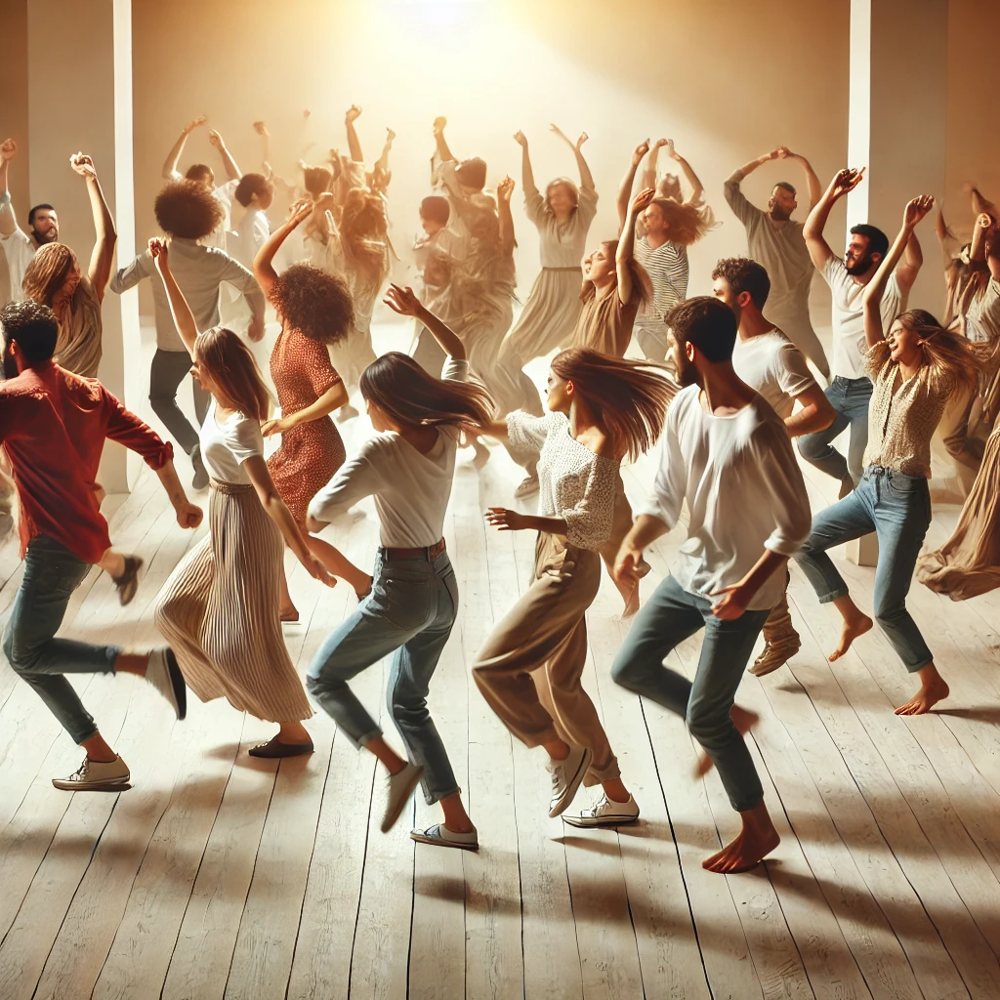

笑いの瞑想
この瞑想を練習するには: オーディオをダウンロードして、以下の手順に従いながら聞いてください。
練習概要: オショーの笑いの瞑想は、ストレスを解消し、内面の平和を促進するために設計された楽しい練習です。笑いから地面との接続、そして自由な表現へと導く三つの主要な段階があります。
第一段階: 笑い (20分)
快適に座り、目を閉じ、自然に笑いが流れるようにします。軽い笑いから始めて、それが増していくのを感じてください。笑いが全身に響き、軽やかさと開放感をもたらします。

第二段階: グラウンディング (20分)
お腹を地面につけて横になります。深呼吸に集中し、残りの緊張が地面に吸収されるのを感じてください。

第三段階: ダンスと自由 (20分)
立ち上がり、笑いとグラウンディングで生まれたエネルギーを自由に表現するように踊り始めます。
